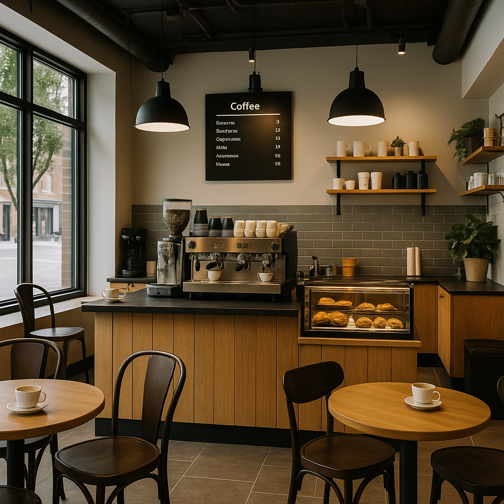

Our Story
Since 1982, Vintage Brew Cafe has been the soul of the town. Born from a passion for authentic brews and cozy vibes, our story is steeped in tradition, love, and a lot of caffeine.
Brewed with Heart
Established in the heart of the city, our cafe began as a humble dream to create a cozy corner where coffee meets culture. Inspired by vintage aesthetics and timeless recipes, we serve more than just coffee — we serve warmth, connection, and stories in every cup.

Contact Us
📍 Address: The Vintage Bean Café, 47 Elm Street, Old Town, Mumbai, India – 400001
📞 Phone: +91 98765 43210
✉️ Email: hello@vintagebean.com
🕒 Opening Hours: Monday – Sunday: 8:00 AM – 10:00 PM